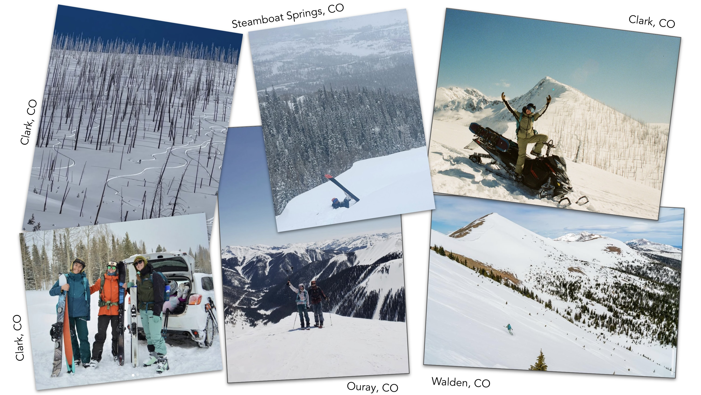

# ---- Load required packages ----
library(here) # for file management
library(tidyverse) # for data wrangling
library(ggplot2) # for plotting
library(knitr) #
library(kableExtra) # for creating tables
library(terra) # for working with vector spatial data
library(sf) # for working with vector spatial data
library(elevatr) # for extracting elevation at pointsA Look At Elevated Risk Factors for Avalanche Accidents in Colorado
Uncovering the Role of Season and Elevation in Avalanche Risk in R
UCSB MEDS - EDS 222 - Stats for Environmental Data Science

Winter recreation is a lot of fun, it’s no wonder why winter recreation into the backcountry is more popular than ever. I’m an avid snowboarder and love to go on backcountry tours and snow mobiler. I speant the past 6 years living in a mountain town in Northern Colorado. It wasn’t until I moved to Colorado, from California that I realized the danger that avalanches played in winter recreation. Colorado is the most dangerous state for avalanche risk. Compared to its neighboring states Colorados steep and rugged terrain mixed with low moisture storms create a recipe for disaster in terms of avalanche risk. Over the past 50 years, Colorado generally sees the highest amount avalanche accidents in the U.S.
In this assignment, I am interested in the relationship between month and elevation on avalanche accidents in Colorado.
Null Hypothesis (H₀): There is no interaction between elevation zones and months in determining avalanche fatality rates. Specifically, the avalanche fatality rates do not differ between elevation zones across months.
This phrasing highlights the interaction you’re testing, clarifies the levels of elevation, and connects them explicitly to the variable of time (months). - Alternative Hypothesis: Avalanche fatality rates differ by elevation zone and month
Here I share my beginner’s R analysis exploring the impact of elevation and season on avalanche risk in Colorado.
1. Set Up Workspace
To get started, I need to set up my workspace. In the code chunk below, I load in the packages that will be necessary for my analysis.
2. Read in Project Data
Now it’s time for me to read in my project data. I got data for the Colorado Avalanche Information Center.
# ---- Read in data ----
av_accidents <- read_csv(here::here("data","avalanche_accidents.csv")) %>%
filter(State == "CO") # Filter for Colorado (CO) in State Column
head(av_accidents)# A tibble: 6 × 16
AvyYear YYYY MM DD Location Trigger `D Size` Setting State lat lon
<dbl> <dbl> <dbl> <dbl> <chr> <chr> <dbl> <chr> <chr> <chr> <chr>
1 2023 2023 4 29 Bald Mou… AS 2 BC CO 39.4… -105…
2 2023 2023 3 19 Maroon B… AS 3 BC CO 39.1… -106…
3 2023 2023 3 17 Rapid Cr… AS 3 BC CO 39.0… -107…
4 2023 2023 3 16 Purgator… N NA TN CO 37.6… -107…
5 2023 2023 2 25 South of… AS 2 BC CO 37.3… -107…
6 2023 2023 2 25 Red Lake… AM 2.5 BC CO 37.0… -106…
# ℹ 5 more variables: PrimaryActivity <chr>, TravelMode <chr>, Killed <dbl>,
# Description <chr>, Date <chr>3. Prepare Data
Prepare Avalanche Accidents Data
# ---- Clean av_accidents data ----
# Clean lat and lon columns by removing NAs, 0, and #REF values
av_accidents <- av_accidents %>%
drop_na(lat, lon) %>% # Drop NAs in lat and lon columns
mutate(across(c(lat, lon), as.character)) %>% # Ensure columns are characters for filtering
filter(lat != "0", lon != "0", lat != "#REF!", lon != "#REF!") %>% # Remove values that equal 0 or #REF!
mutate(across(c(lat, lon), as.numeric)) # Convert back to numeric
# Convert avalanche accidents to spatial object to extract elevation at geometry
av_points <- sf::st_as_sf(av_accidents, coords = c("lon", "lat"), crs = 4326)Extract Elevation at Accident Locations
# ---- Extract elevation at avalanche accident locations ----
# Call in elevation data using `elevatr`
av_points <- get_elev_point(locations = av_points,
prj = sf::st_crs(4326)$proj4string)
# Convert the result back to a data frame by replacing av_accidents
av_accidents <- as.data.frame(av_points)
# ---- Clean and remove unwanted elevation values ----
av_accidents <- av_accidents %>%
filter(elevation != 0, elevation != -10000)
# ---- Add a column for elevation band ----
# Define and add a column for elevation groups
av_accidents <- av_accidents %>%
mutate(elevation_group = case_when(
elevation < 3352.8 ~ "Below Treeline",
elevation >= 3352.8 & elevation <= 3652 ~ "Near Treeline",
elevation > 3652 ~ "Above Treeline"
))Prepare Month Column
# ---- Prepare month column for preliminary plots ----
# Define list of Month Names for plot labels
month_names <- c(
"1" = "January",
"2" = "February",
"3" = "March",
"4" = "April",
"5" = "May",
"6" = "June",
"7" = "July",
"9" = "September",
"10" = "October",
"11" = "November",
"12" = "December"
)
# Define av_accidents_plot data to be used for the plot, prepping this separately because I don't want to use this for the glm
av_accidents_plot <- av_accidents
# Define and apply levels for winter season
av_accidents_plot$MM <- factor(av_accidents$MM,
levels = c(9, 10, 11, 12, 1, 2, 3, 4, 5, 6, 7, 8),
ordered = TRUE)
# Map MM column values to their corresponding names and order for plot
av_accidents_plot$month_names <- factor(
av_accidents$MM,
levels = c(11, 12, 1, 2, 3, 4, 5, 6, 7, 9, 10),
labels = c("November", "December", "January", "February", "March", "April",
"May", "June", "July", "September", "October"),
ordered = TRUE
)
# ---- Prepare month column for glm ----
# Add a column for distance from March
av_accidents <- av_accidents %>%
mutate(
MM = factor(MM, levels = c(9, 10, 11, 12, 1, 2, 3, 4, 5, 6, 7, 8), ordered = TRUE),
dist_from_march = as.numeric(MM) - which(levels(MM) == 3)
)
# Add a column for distance from March
av_accidents <- av_accidents %>%
mutate(
dist_from_march = as.numeric(MM) - match(3, levels(MM))
)Filter data to Colorado
4. Visualize Preliminary Data
Visualize Accidents by Elevation
Code
# ---- Plot accidents by elevation group ----
ggplot(data = av_accidents) +
geom_histogram(aes(x = elevation),
fill = "#4ECBDE",
alpha = 0.8) +
geom_vline(xintercept = c(3352.8, 3652), color = "firebrick", size = 0.75, linetype = "solid") +
theme_minimal() +
theme(plot.title = element_text(face = "bold", size = 16),
axis.title.x = element_text(angle = 0,
vjust = 0.5,
face = "bold"),
axis.title.y = element_text(angle = 0,
vjust = 0.5,
face = "bold")) +
labs(title = "Avalanches Accidents by Elevation Zone in Colorado",
x = "Elevation (Meters)",
y = "Avalanche\nAccidents") +
geom_text(aes(x = 3100, y = .5),
label = "Below Treeline", size = 4, fontface = "italic") +
geom_text(aes(x = 3500, y = .5),
label = "Near Treeline", size = 4, fontface = "italic") +
geom_text(aes(x = 3850, y = .5),
label = "Above Treeline", size = 4, fontface = "italic")# ---- Plot accidents by month ----
ggplot(data = av_accidents) +
geom_bar(aes(x = MM),
fill = "#4ECBDE",
alpha = 0.8) +
scale_x_discrete(labels = c("1" = "January",
"2" = "February",
"3" = "March",
"4" = "April",
"5" = "May",
"6" = "June",
"7" = "July",
"8" = "August",
"9" = "September",
"10" = "October",
"11" = "November",
"12" = "December")) +
theme_minimal() +
theme(plot.title = element_text(face = "bold",size = 16),
axis.text.x = element_text(angle = 0,
hjust = 0.5,
face = "bold"),
axis.title.y = element_text(angle = 0,
vjust = 0.5,
face = "bold"),
axis.title.x = element_text(angle = 0,
face = "bold")) +
geom_text(
aes(x = factor(MM), label = ..count..),
stat = "count",
vjust = -0.5,
color = "firebrick",
fontface = "bold"
) +
labs(title = "Avalanche Accidents in Colorado by Month",
x = "Month",
y = "Fatal\nAccidents")
—- Randomization test for month —-
Fit a logistic model:
How does month and elevation impact the probability of a fatal avalanche accident?
When they put out their reports they have a risk index for below, at, and above treeline.
Avalanche accidents ~ elevation + season + elevation:season
# Practice
# Aggregate data by Month and elevation group
av_accidents_agg <- av_accidents %>%
group_by(MM, elevation_group) %>%
summarise(accidents = n(), .groups = "drop") %>%
arrange(MM, elevation_group) # Optional: arrange for better viewing
# Fit the avalanche accident model
av_accident_glm <- glm(accidents ~ elevation_group + MM + elevation_group:MM,
family = poisson(link = "log"),
data = av_accidents_agg)
summary(av_accident_glm)
Call:
glm(formula = accidents ~ elevation_group + MM + elevation_group:MM,
family = poisson(link = "log"), data = av_accidents_agg)
Coefficients: (2 not defined because of singularities)
Estimate Std. Error z value Pr(>|z|)
(Intercept) -0.84110 2.42996 -0.346 0.729
elevation_groupBelow Treeline 2.57429 2.35112 1.095 0.274
elevation_groupNear Treeline 2.50055 2.43090 1.029 0.304
MM.L 8.07922 9.48760 0.852 0.394
MM.Q -8.98983 9.11921 -0.986 0.324
MM.C 5.83775 6.91774 0.844 0.399
MM^4 -3.07261 4.00536 -0.767 0.443
MM^5 2.00061 1.88960 1.059 0.290
MM^6 -0.01921 0.32333 -0.059 0.953
elevation_groupBelow Treeline:MM.L -7.91183 14.46537 -0.547 0.584
elevation_groupNear Treeline:MM.L -8.48474 9.52643 -0.891 0.373
elevation_groupBelow Treeline:MM.Q 6.54228 8.77710 0.745 0.456
elevation_groupNear Treeline:MM.Q 6.85893 9.10407 0.753 0.451
elevation_groupBelow Treeline:MM.C -5.22554 10.42851 -0.501 0.616
elevation_groupNear Treeline:MM.C -6.14813 6.96325 -0.883 0.377
elevation_groupBelow Treeline:MM^4 3.23051 3.78961 0.852 0.394
elevation_groupNear Treeline:MM^4 2.45314 3.99704 0.614 0.539
elevation_groupBelow Treeline:MM^5 -1.16970 2.83398 -0.413 0.680
elevation_groupNear Treeline:MM^5 -1.90849 1.91980 -0.994 0.320
elevation_groupBelow Treeline:MM^6 NA NA NA NA
elevation_groupNear Treeline:MM^6 NA NA NA NA
(Dispersion parameter for poisson family taken to be 1)
Null deviance: 6.4203e+01 on 18 degrees of freedom
Residual deviance: 3.9968e-15 on 0 degrees of freedom
AIC: 104.5
Number of Fisher Scoring iterations: 3# Aggregate data by Month and elevation group
av_accidents_agg_march <- av_accidents %>%
group_by(elevation_group, dist_from_march) %>%
summarise(accidents = n(), .groups = "drop") %>%
arrange(elevation_group, dist_from_march) # Optional: arrange for better viewing
# Fit the GLM
avalanche_glm_march <- glm(
formula = accidents ~ elevation_group + dist_from_march + elevation_group:dist_from_march,
data = av_accidents_agg_march,
family = poisson(link = "log") # Assuming count data follows a Poisson distribution
)
# Summarize the model
summary(avalanche_glm_march)
Call:
glm(formula = accidents ~ elevation_group + dist_from_march +
elevation_group:dist_from_march, family = poisson(link = "log"),
data = av_accidents_agg_march)
Coefficients:
Estimate Std. Error z value
(Intercept) 1.38093 0.21722 6.357
elevation_groupBelow Treeline 1.02749 0.27019 3.803
elevation_groupNear Treeline 0.52825 0.27185 1.943
dist_from_march -0.07569 0.11773 -0.643
elevation_groupBelow Treeline:dist_from_march 0.19400 0.14153 1.371
elevation_groupNear Treeline:dist_from_march 0.06007 0.13810 0.435
Pr(>|z|)
(Intercept) 2.05e-10 ***
elevation_groupBelow Treeline 0.000143 ***
elevation_groupNear Treeline 0.051996 .
dist_from_march 0.520250
elevation_groupBelow Treeline:dist_from_march 0.170475
elevation_groupNear Treeline:dist_from_march 0.663598
---
Signif. codes: 0 '***' 0.001 '**' 0.01 '*' 0.05 '.' 0.1 ' ' 1
(Dispersion parameter for poisson family taken to be 1)
Null deviance: 64.203 on 18 degrees of freedom
Residual deviance: 48.618 on 13 degrees of freedom
AIC: 127.12
Number of Fisher Scoring iterations: 5Poisson(link = “log”): is the standard family for modeling count data, which assumes that the response variable follows a Poisson distribution with a mean that is a function of the predictors. The log link is commonly used because it ensures the predicted count remains positive.
Residuals after 4000 m are very negative, likely because not as many people recreate above that elevation.
Examine the p-values for elevation, season, & elevation:season
Visualize model results
# Plot the predicted avalanche accidents by elevation and seasonOptional: CAIC wants to focus their efforts on avalanche risk education and outreach. Which elevation/zone months should they focus on incidents of on 20% fatalities…